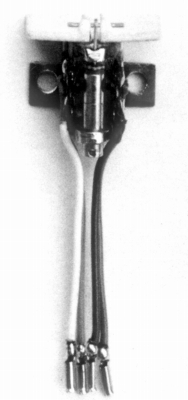
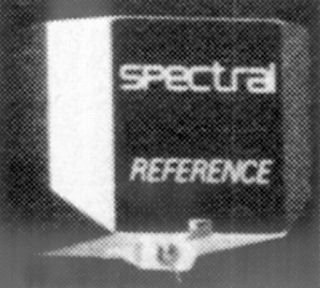
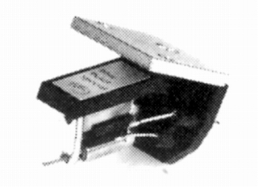
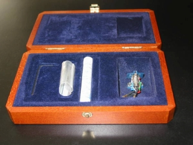
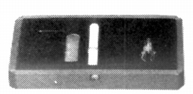
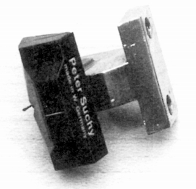
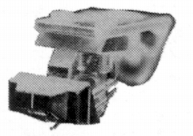
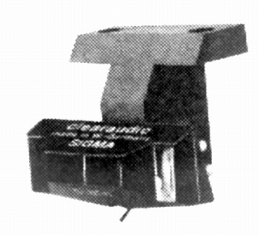

その他のカートリッジ（その他の国）
詳細がほとんど不明のアナログ関連製品メーカーがある。機種数の少ないもの、ブランドの詳細が不明なものはここで扱う。このページではカートリッジ関連のみ出したブランドを扱う。
van den Hul（ヴァン・デン・フル）（Holland)
ケーブル類や、高級スタイラスで有名なオランダのブランド。1985年にMC型カートリッジを発売していた。
MC-1AC

■価格 320,000円
■発電方式 MC型
■出力電圧 0.115mV(1cm/sec
1kHz）
■針圧 2.0g〜2.5g(最適
2.25g)
■再生周波数帯域 20-20,000Hz
■チャンネルセパレーション 25dB
■チャンネルバランス
■コンプライアンス 8×10-6cm/dyne(100Hz)
■負荷抵抗 3Ω
■負荷容量
■内部インピーダンス
■針先 バンデンフル
■自重 6.3g
■交換針
■発売
1985年
■販売終了 1986年頃
■備考 価格は1985年頃のもの
アルミカンチレバー、銅線コイルの仕様。
他にボロンカンチレバー、銅線コイルの仕様のMC-1BC(345,000円)、
ボロンカンチレバー、金線コイルの仕様のMC-1BG(500,000円
受注生産)あり。
SPECTRAL（スペクトラル）（USA)
コントロールアンプやパワーアンプが輸入されていたアメリカのブランド。1987年にMC型カートリッジを発売していた。当時の代理店はユニコエレクトロニクス。
MC Reference

■価格 150,000円
■発電方式 MC型
■出力電圧 0.2mV
■針圧 最適
1.8g
■再生周波数帯域
■チャンネルセパレーション
■チャンネルバランス
■コンプライアンス 8×10-6cm/dyne(100Hz)
■負荷抵抗 47kΩ以下
■負荷容量
■内部インピーダンス 2Ω
■針先 ラインコンタクト
■自重 9.5g
■交換針
■発売
1987年10月
■販売終了 年頃
■備考 価格は1987年頃のもの
1990年頃は220,000円
SUMIKO（スミコ）（USA)
1994年に高出力型MCカートとリッジが紹介されたアメリカのブランド。現在も「オイスターシリーズ」のカートリッジが輸入されている。あちらのサイトによれば、2006年時点で約30年のキャリアを持つブランドで、自らカートリッジを製造するだけでなく、各国の製品の紹介も行っていたようだ。その中には日本のグレース、スペックス、光悦などもあったらしい。当時の代理店はトレンタコーポレーション、現在はパシフィックオーディオ。
Blue Point Special

■価格 35,000円
■発電方式 MC型
■出力電圧 3.0mV
■針圧 1.7〜2.1g
■再生周波数帯域
■チャンネルセパレーション
■チャンネルバランス
■コンプライアンス
■負荷抵抗 47kΩ
■負荷容量
■内部インピーダンス 2Ω
■針先 0.3×0.7mil
■自重 5.6g
■交換針
■発売
1994年6月
■販売終了 1999年頃
■備考 価格は1994年頃のもの
EINSTEIN/Tubaphone（アインシュタイン/チューバフォン）（Germany)
1991年にピアノフィニッシュの美しいプリメインアンプが紹介されたドイツのブランド。古いカタログでは「EINSTEIN JAPAN INC」で製作されたものもあるが、当サイト収録品の頃には「ハインツ・アンド・カンパニー」が代理店となっていた。「Tubaphone（チューバフォン）」は最初にカートリッジが紹介された時に、EINSTEIN社の別ブランドとして使われたもの。なおカートリッジはEMTとの共同開発とされている。
TU-2

■価格 180,000円
■発電方式 MC型
■出力電圧 0.21mV
■針圧
■再生周波数帯域
■チャンネルセパレーション
■チャンネルバランス
■コンプライアンス
■負荷抵抗
■負荷容量
■内部インピーダンス 25Ω
■針先 スーパーファインライン
■自重
■交換針 針交換(120,000円)
■発売
1992年3月
■販売終了 1996〜98年頃
■備考 価格は1992年頃のもの
Tubaphone（チューバフォン)名義で紹介された。
TU-2 Black Super

■価格 258,000円
■発電方式 MC型
■出力電圧 0.5mV±2dB
■針圧
■再生周波数帯域
■チャンネルセパレーション
■チャンネルバランス
■コンプライアンス
■負荷抵抗
■負荷容量
■内部インピーダンス 12.5Ω
■針先 スーパーファインライン
■自重
■交換針 針交換(180,000円)
■発売
1998年10月
■販売終了 年頃
■備考 価格は1998年頃のもの
PETER SUCHY（ピーター・スッチィ）（Germany)
ピーター・スッチィは人名らしい。独アナログ界の鬼才と紹介されていた。「The Signature S」を創立20周年モデルと紹介している文章をみたことがある。代理店は「�潟Nラブマン＆サンズ」。
The Signature S


■価格 398,000円
■発電方式 MC型
■出力電圧 0.6mV(5cm/sec)
■針圧 1.6〜2.8g(最適
2.2g)
■再生周波数帯域
■チャンネルセパレーション 35dB以上
■チャンネルバランス
■コンプライアンス
■負荷抵抗
■負荷容量
■内部インピーダンス 50Ω
■針先 ラインコンタクトタイプ(TRIOGON�Uとの記載あり）5×40μ
■自重 10.0g
■交換針
■発売
1998年7月
■販売終了 年頃
■備考 価格は1998年頃のもの
純金コイル巻線。
ハウジングはソリッドスペシャルリードアロイ。
The Sigma Gold

■価格 198,000円
■発電方式 MC型
■出力電圧 0.6mV(5cm/sec)
■針圧 1.6〜2.8g(最適
2.2g)
■再生周波数帯域
■チャンネルセパレーション 35dB以上
■チャンネルバランス
■コンプライアンス
■負荷抵抗
■負荷容量
■内部インピーダンス 50Ω
■針先 5×40μ
■自重 4.0g
■交換針
■発売
1999年7月
■販売終了 年頃
■備考 価格は1999年頃のもの
純金コイル巻線。
ボディは木製。専用ヘッドシェル付き。
サイトマップへ